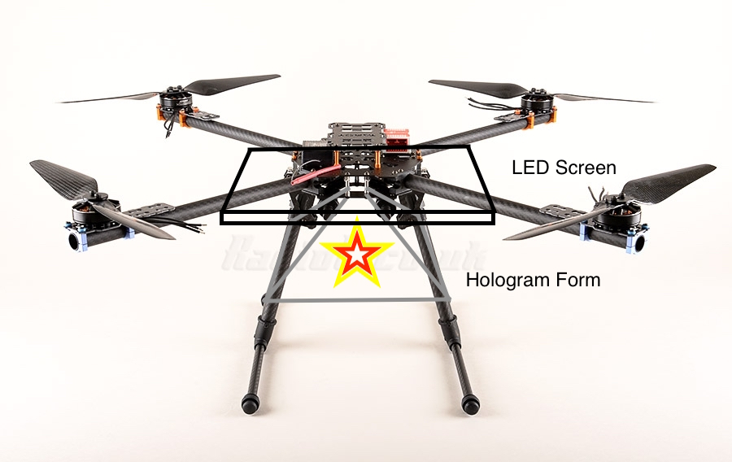

Hologram Form
Personal Project
A hologram image of some candles I made in the upper right hand corner.
Press-Fit Hologram Form
For Laser Cutters Everywhere
While working on a project for my press-fit assignment, I started designing an easy pyramid where each side was composed of the same shape. They each interlock with each other, using both begs and slots. The calculated kerf for this material was calculated to be .007 when cut on a PLS 4.75 laser cutter.

A hologram of me petting a friendly cat!
Future Plans
A creative vision I have for this is that I want to attach these styled pyramids to the bases of drones. I would love to create some sort of performance art piece with these, but find they could have other uses as well. Drones with the ability to display visual messages could be used in advertising and search and rescue. Additionally, they could continue to be used in art. It is not hard for me to imagine seeing this type of thing flying around future theme parks to give the impression of objects floating in space when the drone form is hidden by darkness.
This is definitely an idea I would pitch to a company such as Disneyland. Similarly to how Intel created a musical arrangement using 100 drones(See Below), Disney could use it for pieces such as their electrical parade.
Considering how it is possible to power an RGB LED screen with a Lipo battery when using a BEC, I find it may not be too dificult to get a few larger 32x32 screens in the air. At only 170g per panel, lifting four or more would not be incredibly difficult, requiring only a controller, BEC, and possibly a separate battery.